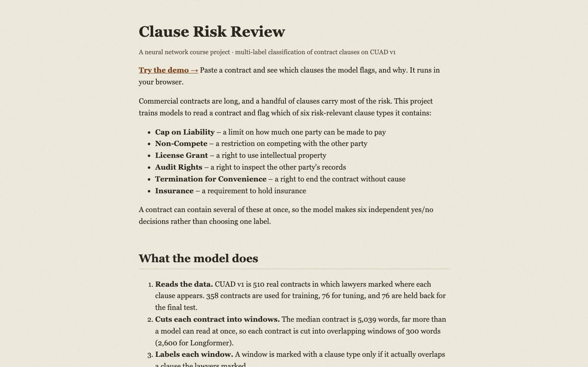
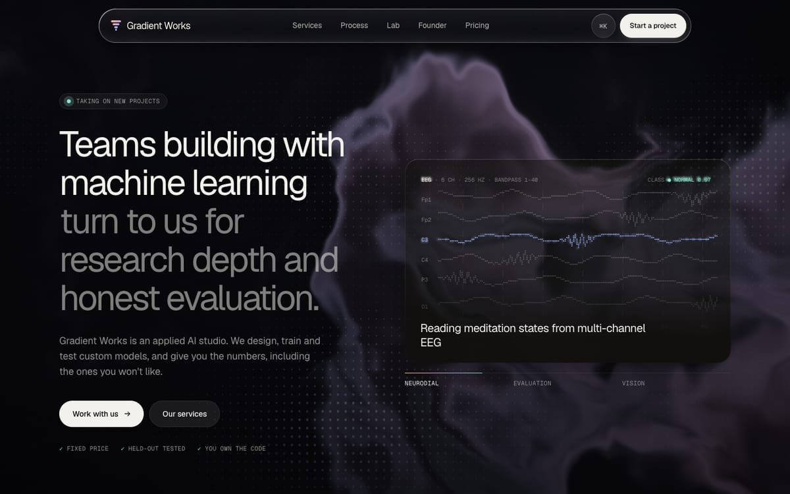

Bring me a problem.
Hover one to see what I’ve already done about it.
-
01ML research
Experiments built to be checked: splits per person or per contract, thresholds tuned on validation only, permutation tests against chance, and the nulls written up too.
FRAME#

Clause Risk Review · results -
02Developer tools
Tools developers install. Sprout maps a codebase for you and your AI agent over MCP; Forme is 53 React components you own as source.
FRAME#
 Sprout · site
Sprout · site -
03Open source
Fixes sent upstream to editors, compilers and build tools: Zed, Gleam, rules_go, gpui-kit, Netcatty. 25 merged so far, 6 in review.
FRAME#
gleam-lang/gleam #6361+ Changed gleam_stdlib v0.40 → v0.41+ diff: hex.pm/diff/gleam_stdlib/…- Changed gleam_stdlib v0.40 → v0.41✓ mergedGleam · merged PR -
04Real-time products
Apps people use: Flow’s shared study rooms over WebRTC, Velora’s forecasts from thousands of simulated paths.
FRAME#
 Flow · home
Flow · home -
05Models for teams
Through Gradient Works, my applied AI studio: a metric agreed up front, a baseline to beat, held-out testing and a written result.
FRAME#

Gradient Works · studio
NOT SURE WHICH ONE?